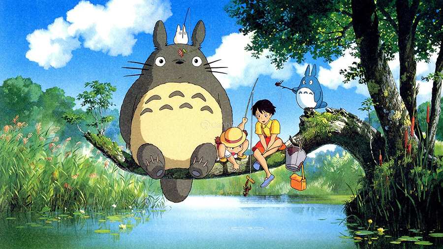

-Gió Nổi là bộ phim anime hay nhất mọi thời đại kể về một thế giới tươi đẹp trong ký ức tuổi trẻ của Horikoshi – một chàng trai tràn đầy năng lượng. Horikoshi là người phát minh ra một chiếc máy bay có khả năng chiến đấu tên là Mitsubishi A6M Zero có tiếng ở Thế Chiến thứ 2.
Khó khăn bủa vây với niềm đam mê của Horikoshi
-Những sức ép từ phía của quân đội, cộng thêm bệnh lao hành hạ đã nhiều lần ngăn cản hoài bão của chàng trai. Bộ phim Gió Nổi có một kết thúc khá buồn và tạo cho khán giả suy nghĩ về cái giá phải trả cho những đam mê của mình.
-Cô sinh viên Hana có quen một chàng trai cuối cùng của tộc người sói. Cả hai nảy sinh tình cảm và kết hôn với nhau. Họ có với nhau một người con gái và một cậu con trai. Trong một ngày mưa, chồng của Hana đã xảy ra một tai nạn và bỏ cô lại một mình với hai đứa con thơ dại.
Cuộc sống vất vả của bà mẹ đơn thân cùng những đứa con của sói
-Hana một mình nuôi hai đứa con nhỏ giữa thành phố. Hai đứa trẻ của cô đều có khả năng hóa thành sói, chính vì vậy nên cô đã đưa bọn nhỏ về quê để tránh phiền phức. Đây là một bộ phim cảm động về gia đình, cho mọi người cái nhìn sâu sắc về hình ảnh một bà mẹ đơn thân giữa cuộc đời này.
-Asura là một cậu bé mồ côi, bị bỏ lại ở vùng đất hoang tàn Kyoto. Để sinh tồn tại nơi đầy khắc nghiệt này, cậu đã phải trải qua rất nhiều khó khăn. Khi được trở lại cuộc sống bình thường, Kyoto đã học cách kiềm chế tính cách nổi loạn của mình.
Cuộc sống đầy khó khăn của Asura khi mất đi người thân
-Cậu dần thích nghi với cuộc sống đã bị xáo trộn. Bộ phim về Asura chiếm trọn tình cảm người xem bởi những sóng gió mà cậu phải chịu trong cuộc sống, giúp họ nhận thức được hành động của mình.
-Cô bé Hotaru rất thân thiết với một linh hồn được gọi là Gin. Mỗi mùa hè về, họ lại gặp gỡ nhau ở vùng nông thôn. Hotaru khi đi lạc trong khu rừng đã được Gin cứu giúp. Dẫu biết mình chỉ là một linh hồn có thể tan biến bất cứ lúc nào nhưng Gin vẫn muốn làm bạn với cô.
Tình yêu thuần khiết giữa linh hồn Gin và Hotaru
-Thời gian dần trôi đến khi Hotaru trưởng thành, mùa hè năm ấy, họ đã yêu nhau vào lễ hội ma quỷ. Cuối cùng thì Gin cũng có thể dang tay ôm lấy cô gái mình yêu mà thổ lộ những lời trong lòng với cô, Hotaru cũng có thể chạm được vào chàng trai của mình. Bộ phim có kết thúc khá buồn và lấy đi rất nhiều nước mắt của khán giả.
-Những Đứa Trẻ Đuổi Theo Tinh Tú là một câu chuyện kể về một cô bé học sinh trung học tên gọi là Asura. Cô là một cô bé ngoan nhưng lại sống khá cô độc, niềm vui duy nhất của cô chính là lắng nghe những âm thanh bí ẩn được phát ra từ chiếc radio cũ kĩ mà cha cô đã để lại sau kho ông qua đời.
Những bộ anime hay của xứ sở hoa anh đào
-Khán giả sẽ có cơ hội bước theo nhân vật Asura trong hành trình tìm kiếm người bạn trai cũ. Chuyến phiêu lưu này đã mang lại cho cô rất nhiều trải nghiệm, sự khắc nghiệt và vẻ đẹp của thế giới bao la.
-Cô gái Umi mỗi ngày đều dựng cờ trước sân của ngôi nhà trên ngọn đồi. Bởi vì Umi hy vọng cha của mình có thể nhìn thấy mà quay trở về tìm lại mẹ con cô. Umi có quen được chàng trai Shun, cả hai người có quyết tâm muốn giữ lại ngôi trường thay vì phá bỏ chúng.
Cái kết trọn vẹn cho tình yêu của Umi và Shun
-Lâu dần, họ thầm thích nhau nhưng Umi lại phát hiện họ có chung huyết thống. Tình cảm ấy bị chôn sâu vào đáy lòng. Sau này, mẹ của Umi trở về, đem sự thật về thân thế của cô nói ra. Cuối cùng, Umi và Shun có thể ở bên nhau mà không vướng bận rắc rối nào nữa.
-Cậu bé Sho có thời gian trở về ngôi nhà thuở nhỏ của mẹ để nghỉ hè. Vô tình một ngày nọ, Sho phát hiện một người tí hon tự xưng là Arrietty. Cô cùng gia đình của mình sống trong khu vườn nhà dì của Sho. Dù bị gia đình ngăn cấm nhưng Arrietty vẫn muốn trở thành người bạn của Sho.
Sự sinh tồn của gia đình tí hon Arrietty
-Từ đây, Sho được biết về những rắc rối mà gia đình tí hon này phải chịu khi sinh tồn với loài người. Sự dũng cảm của những người tí hon cũng giúp Sho cũng có ý chí hơn trong việc chống chọi với căn bệnh của mình.
-Vùng Đất Linh Hồn là câu chuyện về sự kiện gặp gỡ của Chihiro và một chàng trai thần bí Haku. Khi cùng gia đình chuyển đến vùng ngoại ô, Chihiro cùng cha mẹ của cô đã tình cờ phát hiện ra một thế giới thần bí.
Con đường phá giải lời nguyền cho bố mẹ của Chihiro
-Đó là vùng đất được cai trị dưới các vị thần linh, những phù thuỷ cùng các linh hồn. Biến cố kéo đến khi ba mẹ Chihiro bị biến thành những chú heo, khi Chihiro gặp được Haku, cậu đã giúp đỡ cô tìm cách đưa bố mẹ trở về với hình hài con người và thoát khỏi vùng đất này.
-Khi cùng cha của mình chuyển về một vùng thôn xa, Mei và Satsuki đã có những chuyến phiêu lưu đầy hấp dẫn. Satsuki hiện với chỉ 10 tuổi cùng với cô em gái hồn nhiên 4 tuổi là Mei đều rất hiếu thảo, họ trở về để tiện săn sóc cho mẹ đang nằm dưỡng bệnh trong một bệnh viện.

Top những bộ anime hay nhất mọi thời đại bạn không nên bỏ lỡ
-Ở vùng đất này một thời gian, hai người họ đã tìm ra được một khu rừng lạ có các sinh vật ma thuật. Sự khám phá của Mei và Satsuki đã đưa chúng ta tới những phút giây thư giãn về một miền quê êm đềm, một tuổi thơ tươi đẹp, bình yên.
-Sắc Màu là bộ phim về một linh hồn mang tội lỗi được trao cho một cơ hội sống lại, chứng minh bản thân đáng được sống lại một lần nữa. Linh hồn được trao cho cơ thể của cậu bé 14 tuổi đã tự sát là Makoto Kobayashi.
Hành trình tìm lại cơ hội tái sinh
-Chàng trai lúc này có nhiệm vụ còn phải làm rõ nguyên nhân vì sao cậu học sinh này lại tự sát. Ngoài ra, anh cũng cần phải tìm ra tội lỗi và sai lầm của mình khi còn sống dưới sự giám sát của linh hồn Purapura trước thời hạn kết thúc.
-No Game No Life là một bộ phim anime tuyệt vời với cốt truyện độc đáo, nội dung sáng tạo về thế giới giả tưởng. Được chuyển thể từ bộ manga cùng tên bộ phim, sau khi công chiếu đã nhận được sự ủng hộ từ đông đảo khán giả, lọt top anime hay nhất mọi thời đại và có lượt xem cao nhất tại thời điểm đó.
Phim anime không nên bỏ lỡ No Game No Life
-Câu chuyện trong phim xoay quanh một truyền thuyết game thủ trên mạng. Hai nhân vật chính là Shiro và Sora được mời sang một thế giới khác nơi những trò chơi là yếu tố quyết định tất cả những quy tắc và luật lệ. Xuyên suốt bộ phim là những màn đấu trí cân não, tình tiết hấp dẫn, dễ dàng gây nghiện cao cho các game thủ.